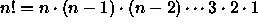

This next part of the problem set is a self-teaching exercise. There is nothing to turn in, and you do not need to do it right after finishing part 3. We suggest that you take a half hour to go through this before you work on the next problem set.
During the semester, you will often need to debug programs. This section contains an exercise to acquaint you with some of the features of Scheme to aid in debugging. Learning to use the debugging features will save you much grief on later problem sets. Additional information about the debugger can be found in Don't Panic, and by typing ? in the debugger.
Use the Edwin M-x load-problem-set command to again load the code for problem set 1 (and ignore the graphics display windows). This will load definitions of the following three procedures p1, p2 and p3:
(define p1
(lambda (x y)
(+ (p2 x y) (p3 x y))))
(define p2
(lambda (z w) (* z w)))
(define p3
(lambda (a b) (+ (p2 a) (p2 b))))
In the Scheme buffer, evaluate the expression (p1 1 2). This should signal an error, with the message:
;The procedure #[compound-procedure P2] has been called with 1 argument ;it requires exactly 2 arguments. ;Type D to debug error, Q to quit back to REP loop:
Don't panic. Beginners have a tendency, when they hit an error, to quickly type Q, often without even reading the error message. Then they stare at their code in the editor trying to see what the bug is. Indeed, the example here is simple enough so that you probably can find the bug by just reading the code. Instead, however, let's see how Scheme can be coaxed into producing some helpful information about the error.
First of all, there is the error message itself. It tells you that the error was caused by a procedure being called with one argument, which is the wrong number of arguments for that procedure. Unfortunately, the error message alone doesn't say where in the code the error occurred. In order to find out more, you need to use the debugger. To do this type D to start the debugger.
The debugger allows you to grovel around examining pieces of the execution in progress, in order to learn more about what may have caused the error. When you start the debugger, it will create a new window showing two buffers. The bottom buffer right now is empty, and top buffer should look like this:
COMMANDS: ? - Help q - Quit Debugger e - Environment browser
This is a debugger buffer:
Lines identify stack frames, most recent first.
Sx means frame is in subproblem number x
Ry means frame is reduction number y
The buffer below describes the current subproblem or reduction.
-----------
The *ERROR* that started the debugger is:
The procedure #[compound-procedure 119 p2] has been called with 1 argument;
it requires exactly 2 arguments.
>S0 (#[compound-procedure 119 p2] 2)
R0 (p2 b)
S1 (p2 b)
R0 (+ (p2 a) (p2 b))
R1 (p3 x y)
S2 (p3 x y)
R0 (+ (p2 x y) (p3 x y))
R1 (p1 1 2)
--more--
You can select a frame by clicking on it with the mouse or by using the ordinary cursor line-motion commands to move from line to line. Notice that the information bottom buffer changes as the selected line changes.
The frames in the list in the top buffer represent the steps in the evaluation of the expression. There are two kinds of steps--subproblems and reductions. This idea will be discussed in lecture on February 10. For now, you should think of a reduction step as transforming an expression into ``more elementary'' form, and think of a subproblem as picking out a piece of a compound expression to work on.
So, starting at the bottom of the list and working upwards, we see
(p1 1 2), which is the expression we tried to evaluate. The
next line up indicates that (p1 1 2) reduces to (+
(p2 x y) (p3 x y)). Above that, we see that in order to evaluate
this expression the interpreter chose to work on the subproblem
(p3 x y), and so on, moving upwards until we reach the error: the
call to (p2 b) from within the procedure p3 has only one
argument, and p2 requires two arguments.
Take a moment to examine the other debugger information (which will come in handy as your programs become more complex). Specifically, in the top buffer, select the line
>S2 (p3 x y)
The bottom buffer should now look like this:
SUBPROBLEM LEVEL: 2
Expression (from stack):
Subproblem being executed highlighted.
(+ (p2 x y) (p3 x y))
---------------------------------------------------------------------
ENVIRONMENT named: (student)
has 79 bindings
==> ENVIRONMENT created by the procedure: P1
x = 1
y = 2
---------------------------------------------------------------------
;EVALUATION may occur below in the environment of the selected frame.
The information here is in three parts. The first shows the expression again, with the subproblem being worked on highlighted. The next major part of the display shows information about the environments. We'll have a lot more to say about environments later in the semester, but for now notice the line
==> ENVIRONMENT created by the procedure: P1
This indicates that the evaluation of the current expression is within procedure p1. Also we find the environment has two bindings that specify the particular values of x and y referred to in the expression, namely x = 1 and y = 2. At the bottom of the description buffer is an area where you can evaluate expressions in this environment (which is often useful in debugging). For example, try evaluating (+ x y), and notice that you can do this, even though these values of x and y are local to this activation of P1.
Before quitting the debugger try one final experiment (you may have already done this). Continue to scroll down through the stack past the line: R1 (p1 1 2) (you can also click the mouse on the line -more- to show the next subproblem). You will then see additional frames that contain various bits of compiled code. What you are looking at is some of the guts of the Scheme system--the part shown here is a piece of the interpreter's read-eval-print program. In general, backing up from any error will eventually land you in the guts of the system. (Yes: almost all of the system is itself a Scheme program.)
You can type q to return to the Scheme top level interpreter.
The code you loaded for problem set 1 also defined three other procedures, called fold, spindle, and mutilate. One of these procedures contains an error. Evaluate the expression (fold 1 2). What is the error? How should the procedure be defined? Notice that you can examine the code for a procedure by using the pp command. For example, evaluating the expression (pp fold) will print the definition of fold.
The code you loaded also contains a buggy definition of a procedure meant to compute the factorials of positive integers: . Evaluate the expression (fact 5) (which is supposed to return 120). Use the debugger to find the bug, and correct the definition.
The stepper is another useful debugging tool that you should become acquainted with. Go into the Scheme buffer and type the expression (+ (* 3 4) (* 5 6)), but instead of evaluating it with c-X c-E, type M-s. The screen will split to show two windows. The top is your Scheme buffer; the bottom is the Stepper buffer, which right now should read,
(+ (* 3 4) (* 5 6)) => ;waiting``Waiting'' means that it's waiting for you to tell it to go on, which you do by pressing the space bar. You'll see Scheme start to work on the subexpression (* 5 6). Continuing to press the space bar will show each element in the evaluation. The various ``waiting'' tokens will be replaced by the values as the evaluation proceeds. At the end, you should be up at the top of the window again, with 42 shown as the value of the call to the stepper. At this point, you can get out of the stepper by moving back to the Scheme buffer.
Try stepping this same expression a few times until you see clearly what is going on. Rather than always hitting the space bar, there are a couple of other stepper commands you can try (press ? to see them listed):
One more experiment: Try stepping through the evaluation of (p1 1 2), which is the expression you used above to learn about the debugger. You will find that when you get to the evaluation of the expression that produces the error, you'll see #[unspecified-return-value] as the result--this should give you a hint that something has gone wrong.
In general, you use the debugger and stepper to home in on bugs from two different ``directions.'' If you have a program that signals an error, you can just let the error occur and use the debugger to try to figure out what happened; or you can step through the program up to the point where you see the error happen and try to figure out what is causing it.
Debugging can be frustrating. The debugging tools are your friends. Call on them regularly. People often wish that they never encountered bugs, and you'll sometimes hear ``theorists'' of computer science teaching to claim that if you plan your programs well, you won't have bugs. We wonder if these ``theorists'' have ever written any programs:
Without erring, and transcending our error, we, as sometimes suggested by the Socratic irony, simply cannot become wise....Error is not a mere accident of untrained intellect, but a necessary stage or feature or moment --Josiah Royce Lectures on Modern Idealism
What is most harmful is trying to preserve oneself from errors.-- Hegel